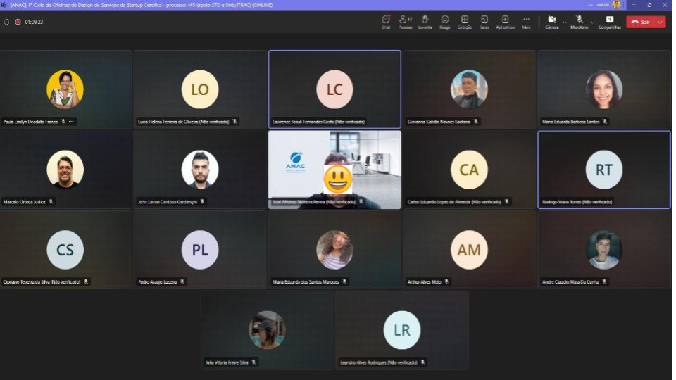

Oficina Certifica 145

A oficina gerou um compromisso claro para a continuidade do trabalho, com a necessidade de mais discussões internas e refinamentos antes da implementação final do sistema.
ESTATÍSTICAS
Tamanho da equipe
10 participantes
Nº de dias
3 dias
O Desafio
Foi desenvolvido a Oficina de Design do Serviço específica para a Certifica 145 da Agência Nacional de Aviação Civil (ANAC) que tem como ideia Identificar problemas, jornadas e priorização de processos do Certifica 145 além de prototipa-lo.
A startup "Certifica" é um projeto focado na transformação digital, criado em parceria com a Superintendência e a STD, para melhorar os processos internos e a experiência do usuário na ANAC. A "Certifica" é voltada especificamente para os processos de certificação nos âmbitos do RBAC 135, 145, 91 e possivelmente 121.
No contexto da Certifica 145, foi discutida a aplicação de diferentes metodologias de design de serviço. Embora o Design Sprint seja amplamente reconhecido por sua estrutura robusta e eficácia na solução rápida de problemas, a abordagem adotada na oficina da ANAC destacou-se como uma oficina de co-design, onde a participação ativa dos envolvidos foi fundamental para o desenvolvimento de protótipos. Essa metodologia permitiu uma maior interação entre os participantes, garantindo que os protótipos criados refletissem de forma precisa as necessidades e expectativas de todos os envolvidos.
A equipe
A oficina foi conduzida pelo facilitador, o professor Marcelo, junto com o colaborador Oto Lima e os integrantes do ITRAC que ajudaram auxiliando na oficina e na criação do relatório final no qual registra tudo o que aconteceu além dos resultados. Também teve no total 10 participantes, cujo estes fazem parte da ANAC. Na Imagem 1 demonstra os participantes reunidos de forma online pela plataforma teams.
Imagem 1 - Participantes da Oficina online.

Fonte: Relatório Oficinas Certifica 145. 2024.
A oficina
Esta oficina com a Certifica foi a segunda realizada, mas desta vez de forma online, utilizando o Teams para comunicação e o Miro para interação e execução das metodologias. Com a experiência prévia dos participantes em oficinas, o evento se desenrolou ao longo de três dias, na data 26/08 até 28/08 de 2024, focando na prototipagem e na realização de testes. Na Imagem 2 representa o desenvolvimento do esboço que posteriormente foi usado como base para criar o protótipo.
Imagem 2 - prototipagem da oficina.
Fonte: Relatório Oficinas Certifica 145. 2024.
Os testes revelaram pontos positivos, como a clara organização das telas e a facilidade de uso para usuários experientes, além de destacar áreas para melhoria. Entre os pontos negativos, foram mencionados a complexidade e os termos técnicos que dificultavam a compreensão para usuários menos experientes, e a simplicidade excessiva da interface que compromete a compreensão das funcionalidades. As sugestões para melhorias incluíram a adição de indicadores visuais e tutoriais passo a passo, bem como a necessidade de testar o protótipo com usuários sem experiência técnica para assegurar a acessibilidade para todos.
Destaques da oficina
Dia 1: Manhã
Iniciou-se com a contextualização, resumindo a oficina. Em seguida, foi realizado o método quebra-gelo, onde cada participante utilizou um post-it para escrever seu nome e um interesse pessoal relacionado a alguma região do Brasil, como comida típica, música, dança, lazer, atração turística, etc. Posteriormente, os post-its foram posicionados sobre as regiões referidas. A seguir, os participantes listaram as experiências dos Regulados em relação às suas dores e expectativas. Depois, foi feita a Enunciação do Problema a ser trabalhado e, em seguida, aplicou-se o método personas para a definição dos perfis de usuários.
Dia 1: Tarde
O trabalho iniciou com as Jornadas dos usuários, que foram divididas em 5 fases. Para o encerramento, foi utilizada a metodologia “É, Não é, Faz, Não Faz”, desenvolvida inicialmente em dois grupos de participantes e depois consolidada em um único grupo para definição.
Dia 2: Manhã
No segundo dia começou com Benchmarking, onde os participantes pesquisaram e adicionaram exemplos de outros serviços ou iniciativas que consideravam casos de sucesso ou que não se aplicavam ao caso em questão. Em seguida, foi aplicada a metodologia Crazy 8, em que cada participante gerou ideias individualmente, apresentou-as e, depois, votou nas que mais gostou. Após um intervalo, iniciou-se o Storyboarding, onde os participantes usaram o Miro para esboçar ideias sobre telas e funcionalidades.
Dia 2: Tarde
Continuou com o desenvolvimento do Storyboarding e protótipo, focando nas funcionalidades e fluxos. Os participantes montavam no Miro o Storyboarding e a equipe ITRAC passava para o figma em forma de prototipada, apesar do Storyboarding já está em forma de protótipo de baixa fidelidade.
Dia 3: Manhã
Novamente continuaram a prototipagem com o Storyboarding, pois ainda não tinham sido finalizados, mas já estavam quase completos. Por fim, o figma foi apresentado para os participantes, para verificarem se estava correto sobre funcionalidades telas e fluxo.
Dia 3: Tarde
Ocorreu os testes com os 3 usuários, que foram distribuídos em 3 salas simultaneamente no Teams. Obtendo feedbacks valiosos.
O resultado
A oficina resultou na criação de um protótipo preliminar do sistema de certificação 145, que, embora ainda em fase inicial, já incorpora sugestões e feedbacks dos participantes. Este protótipo serve como base para futuras iterações e refinamentos.
A oficina permitiu uma identificação clara das principais dores e desafios enfrentados pelos regulados no processo de certificação. Isso incluiu questões como a imprevisibilidade nos prazos, a dependência de consultorias externas e a complexidade dos procedimentos exigidos.
Foram propostas soluções, como a simplificação do sistema, a customização de procedimentos e a implementação de funcionalidades inspiradas em outros sistemas conhecidos, como o de declaração de imposto de renda.
A oficina foi bem-sucedida em alinhar as expectativas entre regulados e reguladores, com a equipe da UnB desempenhando um papel crucial em conduzir discussões focadas no usuário. Houve uma colaboração efetiva entre os participantes, o que resultou em um protótipo que reflete as reais necessidades do mercado.
Os participantes foram engajados de maneira significativa, garantindo que suas vozes fossem ouvidas e suas necessidades fossem consideradas no desenvolvimento do sistema. A interação direta com o protótipo permitiu que os usuários identificassem pontos de melhoria e sugerissem ajustes, tornando o sistema mais intuitivo e funcional.
Esses resultados refletem o progresso significativo alcançado durante a oficina, estabelecendo uma base sólida para o desenvolvimento de um sistema de certificação mais eficiente e centrado no usuário. Foi reconhecida a importância de manter um diálogo contínuo com os usuários para ajustar e melhorar o sistema ao longo do tempo, garantindo que ele atenda às necessidades do mercado.